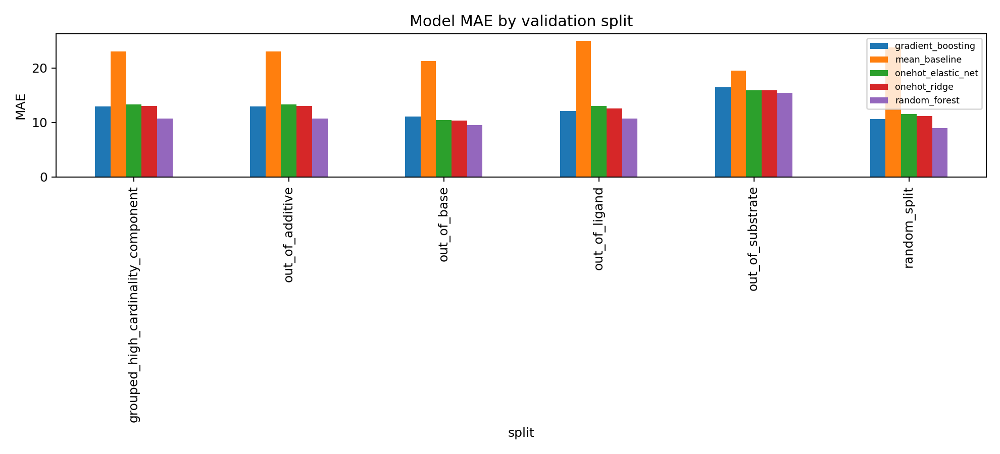
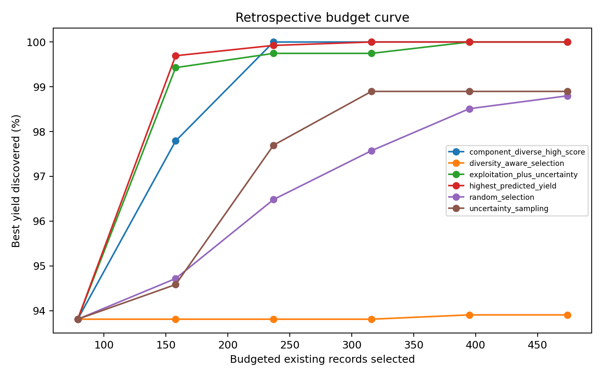
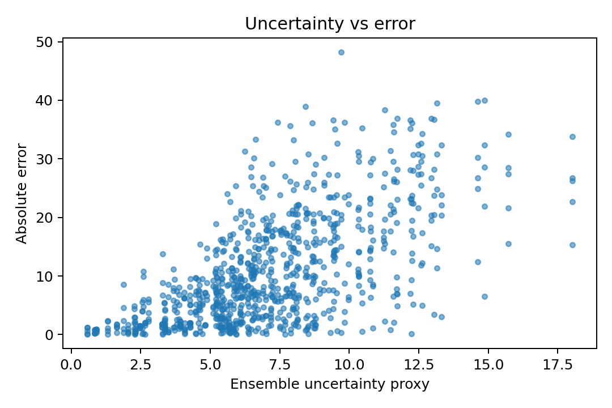

Flagship Project
Reaction Yield Prediction And Synthesis-Aware ML
Retrospective public-data HTE reaction-yield workflow with reaction cleaning, categorical component featurization, out-of-component validation, uncertainty diagnostics, active-learning simulation, and existing-record ranking.
1. Overview
Built a public-data reaction-yield modeling benchmark around a Buchwald-Hartwig HTE dataset. The project emphasizes leakage-aware validation and decision-support diagnostics rather than operational chemistry guidance.
2. Scientific And Technical Problem
Reaction-yield models can look strong under random splits while failing to generalize to held-out reaction components. This workflow tests random and out-of-component validation, uncertainty diagnostics, and budgeted existing-record selection.
3. Dataset
- Public Buchwald-Hartwig HTE reaction-yield benchmark from the Ahneman/Dreher/Doyle lineage.
- 3,955 clean public records after target and component checks.
- Component labels: ligand, additive, base, and aryl halide.
- Target: measured reaction yield percentage.
4. Methods
Implemented dataset selection, aggregate data audit, cleaning, categorical component featurization, random splits, grouped component splits, mean and ML baselines, uncertainty diagnostics with empirical coverage analysis, active-learning simulation over existing records, ranking diagnostics, and model interpretability.
5. Validation Strategy
- Random split for baseline comparability.
- Out-of-substrate, out-of-ligand, out-of-base, and out-of-additive splits where possible.
- Additive-held-out grouped split used as the primary reliability split for model selection.
- In this dataset, the highest-cardinality chemically meaningful grouping is additive, so the grouped high-cardinality component split and out-of-additive split share the same held-out group design.
- Data leakage audit excludes target-derived predictors.
6. Key Results
Selected a random forest on the additive-held-out grouped split: MAE 10.754, RMSE 14.237, R2 0.726, Spearman 0.860, and top-10% enrichment 7.333. Uncertainty diagnostics reported empirical 90% interval coverage of 0.798 on the primary split.
7. Figures



8. Limitations
- Retrospective public-data benchmark only.
- No new chemistry generation.
- No wet-lab protocol or operational synthesis guidance.
- Component structures are unavailable in the selected workbook, so the public run uses categorical component features.
- Uncertainty estimates are diagnostic and not guarantees.
9. Reproducibility
The standalone repository includes source code, tests, aggregate reports, metrics, figures, and a small fixture path. The raw workbook is downloaded from the public source during reproduction and is not committed.
10. What This Demonstrates
Industry-relevant synthesis-aware ML judgment: public-data curation, reaction-component features, validation leakage control, baseline comparisons, uncertainty-aware prioritization, and clear boundaries around retrospective existing-record ranking.